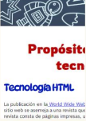
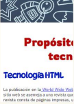

Bienvenidos a mi pagina
Web
Se mostrara lo visto y realizado en clases
Se mostrara lo visto y realizado en clases
Menu en css
La sección del Menú CSS se utiliza para crear y / o editar estilos de diseño para aplicar en Aplicaciones de menú. Para crear un nuevo tema para el menú, primero es necesario seleccionar un tema para usar como base del nuevo tema.
El efecto Hover
El efecto hover es la alteración del aspecto de un componente de la interfaz gráfica una vez que se posa el ratón sobre él, aunque no haya sido seleccionado. Por ejemplo, si posas el ratón sobre esta palabra verás que cambia de color, dándote a entender que te derivará a otro enlace si pinchas en ella, pero aún no puedes visualizar lo que se esconde detrás de esta palabra. Todo lo que necesitará el usuario para visualizar tu efecto es un ratón. Es muy original cuando colocamos este efecto a pie de foto. El efecto hover también se conoce como hovering. Es uno de los efectos CSS más utilizados en diseño web.
Texto alrededor de una imagen
Un texto alrededor de una imagen se refiere a la descripción o contenido textual que se coloca en cercanía o contorno de una imagen, generalmente con el propósito de proporcionar información adicional, contextualizar la imagen o complementarla de alguna manera. Este tipo de texto puede encontrarse en diversos medios y contextos, como en libros, revistas, sitios web, presentaciones o anuncios publicitarios. Su ubicación puede variar, pero comúnmente se sitúa cerca de la imagen correspondiente, ya sea en forma de párrafos, leyendas, descripciones o etiquetas.
css y html
 

Que es el efecto hover y menu css
Especifica que el usuario posee un dispositivo de entrada con la capacidad de flotar sobre un elemento.
La sección del Menú CSS se utiliza para crear y / o editar estilos de diseño para aplicar en Aplicaciones de menú. Para crear un nuevo tema para el menú, primero es necesario seleccionar un tema para usar como base del nuevo tema.
La pseudo-clase :hover , es sin duda unas de las más utilizadas en CSS, ya que nos permite establecer un segundo estado a cualquier elemento, cuándo un usuario interactúa con este, por ejemplo, al pasar el cursor encima.
El diseño de un menú en CSS no solo permite cambiar el color de fondo, los tonos de las letras y las tipografías de cada etiqueta. Por el contrario, al utilizar CSS es cuando podrás dar un formato especial al menú y situarlo como encabezado, al pie de la página o como un menú en cascada o vertical
...